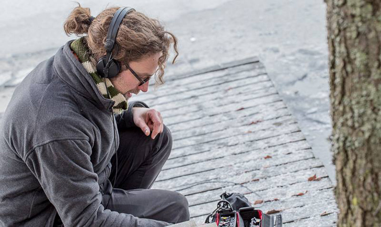
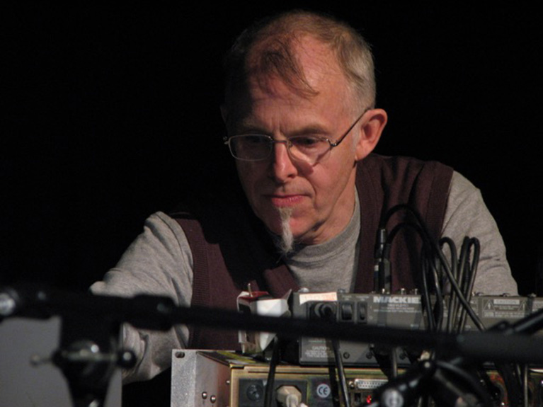

PROGRAMME
The day's programme (Thursday, May 5th) is the following:
10:00 : Registration and coffee
10:30 : Participant presentations (6 presentations - 10 min talk + 5 min discussion each)
12:00 : Lunch with a musical performance
13:30 : Participant presentations (6 presentations - 10 min talk + 5 min discussion each)
15:00 : Tea and biscuits with a performance
16:00 : Roundtable (participants give a ~4 min response to emerging themes as they see them)
17:00 : Performances (improvisation, liveness)
18:00 : Discussion and summary of the day (what happened? how do we proceed?)
19:00 : Dinner
PERFORMANCES
There will be three performance sessions during the day:
Adriana Sa: Included Middle
Stelios Mousakis: Fantasia On A Single Number
Marije Baalman: Wezen - Gewording
Till Bovermann: Half-closed loop
Stephanie Pan: Our Lady of Late
Pete Furniss: The Outside-in Side
PARTICIPANTS
Till Bovermann: Thoughts on Instrumentality for Sonic Wilderness Interventions
Music making has a long tradition and so does the selection of places at which music is performed. Over time, such places turned from simple common areas located i.e. in the centre of a settlement to intentionally designed locations such as churches and concert halls that foster sonic qualities by architectural acoustic elements. Sometimes, however, it feels necessary to escape established performance places and enrich soundscapes of areas by music that are not commonly accepted to be environments for music making. Areas that are off-the-grid, wild. This talk examines the nature of such contemporary wilderness performances, touching aspects like composition, the act of playing, the choice of instruments, and the interpretation of the term "performance" itself.Biography
Till Bovermann studied and worked at Bielefeld University where he received a PhD for his work on Tangible Auditory Interfaces. Later, he worked as a post-doctoral researcher on tangible and auditory interaction at the Media Lab of Aalto University, Finland. Among others, Till has been teaching instrument design and sound technology at various international institutions, among others the IMM in Düsseldorf, at Aalto Universiy and at the institute for time-based media of UdK Berlin. In his artistic works, he often addresses the relationship between seemingly contradictory elements, e.g. the digital and physical realm. Till also develops software in and for SuperCollider and runs TAI-stuido.org. Since 2014, Till is the principal investigator/UdK Berlin of the 3DMIN project on “Design, Development and Dissemination of New Musical Instruments”, a collaboration between UdK Berlin and TU Berlin.

Biography
Sarah Nicolls is an experimenting pianist and inventor of the Inside-Out Piano, an instrument designed to allow playing of the 'inside' of the piano more easy, and more visible. Since creating her latest I-OP in 2014, a vertical grand which stands 2.5m tall, Sarah has made her first own-material solo album, We're Inside and Outside, and created a theatre show, Moments of Weightlessness. In it, Sarah pushes, ratchets and swings her piano, talking about the process of invention and discovery as a metaphor for her journey into motherhood. Her research in the past has included several years focusing on live electronics to expand the piano performance environment. She worked with Atau Tanaka using EMG sensors, Hugo Morales Murguia on a piece with pressure sensors on the lid of a Disklavier, PA Tremblay, Michael Edwards, Jonathan Green, Richard Barrett and many more composers. Sarah is a Senior Lecturer in Music at Brunel University and has been funded by Arts Council England, Sound and Music, AHRC, EPSRC, Athena Swan and BRIEF.
Biography
Hans Johannsson has made classical stringed instruments, since the late seventies. Since gaining a diploma of distinction at the Newark School of Violin Making in the UK in 1980, and receiving a masters diploma from the Icelandic Arts Council in 1982, he has made instruments for professional musicians in many countries. He has lectured on violin acoustics in Europe, Asia, Africa and the Americas, taken part in design exhibitions, produced and participated in television documentaries on violin making and a BBC radio programme documenting the use of technology in traditional violin making. Since 2004 he has participated in the violin acoustics research team at Oberlin Ohio, where a few prominent violin makers and scientist meet every year. Also he is part of the Group of instrument makers and scientists at Cambridge University Engineering department under Prof. Jim Woodhouse. Over the past few years, he has been developing a new stringed instrument for the twenty-first century in collaboration with Olafur Eliasson, and collaborated with Prof. Patrick Gaydecki at the University of Manchester.
Biography
Koray Tahiroğlu is a research fellow, musician and lecturer in the Department of Media at the Aalto University School of ARTS, Finland. He is the founder and head of SOPI (Sound and Physical Interaction) research group. He practices art as a researcher focusing on embodied approaches to sound and music interaction, as well as a performer of live electronic music. Since 2004, he has been also teaching workshops and courses introducing artistic strategies and methodologies for creating interactive music. Tahiroğlu has performed experimental music in collaboration as well as in solo performances in Europe and North America.

Biography
Adriana Sa is transdisciplinary artist, performer musician/ composer. Since 1997 her work has been presented in Europe, USA, Japan and Brazil, e.g. at Calouste Gulbenkian Foundation, Culturgest, Teatro Maria Matos, Museu do Chiado (Portugal); Experimental Intermedia Foundation, PS1/ MoMa, Eyebeam (USA); Caixa Forum, Arteleku (Spain); ICA (UK); ACAC (Japan). For almost two decades she used architecturally-scaled instruments with sensor technologies to explore music connected to light, space, movement, architecture, weather and social context. In the last few years Adriana has been a researcher at Goldsmiths (EAVI). She has been dedicated to audio-visual instrument design and composition, drawing from cognition/ attention research. Using 3D audio-visual software that operates based on pitch detection from a custom zither input, she developed a performance language that explores disparities between acoustic and digital outputs. Her scientific work was published by MIT (Leonardo Almanac and Leonardo Transactions), XCoAX and NIME. She chaired ICLI 2014 and was editor of its Proceedings.
Biography
Andrew McPherson is Senior Lecturer (Associate Professor) in the Centre for Digital Music at Queen Mary University of London. With a background in electrical engineering and music, his research focuses on augmented acoustic instruments, new performance interfaces, and study of performer-instrument interaction. He did his undergraduate and Master’s work at MIT, completing his M.Eng. thesis in Barry Vercoe’s group at the MIT Media Lab. He completed his PhD in music composition in 2009 at the University of Pennsylvania. Before joining Queen Mary in 2011, he spent two years as a post-doctoral researcher in the Music Entertainment Technology Laboratory (MET-lab) at Drexel University. He is the creator of the magnetic resonator piano, an augmented acoustic piano which has been used in over 20 pieces, including a collaboration with the London Chamber Orchestra, and his TouchKeys multi-touch keyboard was featured in a successful Kickstarter campaign in 2013. In 2016, his lab is launching a second Kickstarter campaign for Bela, an open-source embedded platform for low-latency audio and sensor processing.
Biography
Marije Baalman is an artist and researcher/developer working in the field of interactive sound art. Since 2010 she works as a freelance artist and developer from Amsterdam and works as a hardware engineer at STEIM. Her current research goes into the use of wireless networks for live performance, installations and interactive environments. In her artistic work she is interested in the realtime components of the work. To realise her works she mostly uses open source technology (software and hardware) and she is an active contributor to the open source community.
I’m particularly interested in the ideas of presence, identity, interagency, sociality, liveness and user experience in rapidly evolving performance ecologies.
• how can additional technology be musically fruitful or obstructive?
• interagency and (tele)presence—what level of control is desirable?
• what to hold onto or adapt within a sense of personal sound?
• how can divergent sonic sources be managed to complement one another?
• how easy is it to set up and get quickly to making music?
Biography
Pete Furniss: I have been a professional musician and educator across a broad range of environments since 1992, performing internationally in contemporary classical, chamber and orchestral music, as well both syle-based and free improvisation. In 2006 I began playing with live electronics and am currently preparing a PhD in technologically mediated performance practice at the University of Edinburgh, supported by the AHRC. Teaching's very important to me and has been part of my practice for 25 years, from early years to higher education and beyond. I'm also involved in community-based projects with young people, as well as arranging, composing and mentoring.
Biography
Since arriving at STEIM in 1985, Joel Ryan has nourish the evolution of a live performance practice for electronic music in Europe. This has been followed through an extensive collaboration with artists and musicians across genres from free-jazz to ballet, electronica, contemporary chamber music and theater. Formerly a Research Associate at the Lawrence Berkeley Labs of the University of California, Ryan has taught philosophy, physics, and mathematics. He is Emeritus Director of STEIM and Docent in Sonology at the Royal Conservatory Den Haag. His work in digital sound at STEIM produced a series of idiosyncratic instruments; with these he currently collaborates with among others: Evan Parker, William Forsyth, FM Uitti, Agusti Fernandes, Najib Cherradi, Peter Evans and Sainkho Namtchylak.
He has performed at the Theater Chatelet, Ircam, La Villette, Instants Chavire, and Radio France in Paris; Darmstadt, the Moers Festival, Hellerau Dresden, Stadtgarten Köln; Akademy der Kunst, Hebel Theater, VUB and Podewil Berlin; Het Concertgebouw, Het Music Theater, the BimHuis, Stadschouwberg, Muziekgebouw, the Paradiso, OT301, Felix Meritus/Shaffy Theater, de Waag, Frascatti, de Balie Amsterdam; Brussels, Ghent, Liege, Leuven, Hasselt, Kortrijk Belgium The Pit Inn Shinjuku and Bunka Kai Kan Tokyo; The Brooklyn Academy of Music and The Kitchen, New York; Staatsoper, Dance Quartier, Porgy and Bess and the U of Music Vienna; El Museo Nacional Centro de Arte Reina Sofía, Palacio des Belles Artes Madrid; He Luting Shanghai; Kumho Art Hall, Seoul; Reina Sofía and the Palacio des Belles Artes Madrid; Il Auditori Barcelona,The Round House, Sadlers Wells, LSO St Luke’s, Queen Elizabeth Hall and Café Oto London.
Sarah Nicolls: Old Instruments Becoming New
I'm interested in the connection between existing and new instruments: how we use what has developed over centuries, to add subtlety to instrument design and to harness pre-existing experience from performers' bodily knowledge. I might also talk about hybrid pianos and where the gaps are, in my opinion.Biography
Sarah Nicolls is an experimenting pianist and inventor of the Inside-Out Piano, an instrument designed to allow playing of the 'inside' of the piano more easy, and more visible. Since creating her latest I-OP in 2014, a vertical grand which stands 2.5m tall, Sarah has made her first own-material solo album, We're Inside and Outside, and created a theatre show, Moments of Weightlessness. In it, Sarah pushes, ratchets and swings her piano, talking about the process of invention and discovery as a metaphor for her journey into motherhood. Her research in the past has included several years focusing on live electronics to expand the piano performance environment. She worked with Atau Tanaka using EMG sensors, Hugo Morales Murguia on a piece with pressure sensors on the lid of a Disklavier, PA Tremblay, Michael Edwards, Jonathan Green, Richard Barrett and many more composers. Sarah is a Senior Lecturer in Music at Brunel University and has been funded by Arts Council England, Sound and Music, AHRC, EPSRC, Athena Swan and BRIEF.
Hans Johannsson: Knowing what to feel (changing paradigms in traditional violin making through technology)
Experimental Modal Analysis in violin making, Real time convolution filtering and impulse response measurement for violin tone emulation.Biography
Hans Johannsson has made classical stringed instruments, since the late seventies. Since gaining a diploma of distinction at the Newark School of Violin Making in the UK in 1980, and receiving a masters diploma from the Icelandic Arts Council in 1982, he has made instruments for professional musicians in many countries. He has lectured on violin acoustics in Europe, Asia, Africa and the Americas, taken part in design exhibitions, produced and participated in television documentaries on violin making and a BBC radio programme documenting the use of technology in traditional violin making. Since 2004 he has participated in the violin acoustics research team at Oberlin Ohio, where a few prominent violin makers and scientist meet every year. Also he is part of the Group of instrument makers and scientists at Cambridge University Engineering department under Prof. Jim Woodhouse. Over the past few years, he has been developing a new stringed instrument for the twenty-first century in collaboration with Olafur Eliasson, and collaborated with Prof. Patrick Gaydecki at the University of Manchester.
Koray Tahiroğlu: Performer's Engagement in Musical Interaction with a NIME
With the exception of arbitrary re-actions, musicians do perform skilled tasks in; mastering the control of their actions, applying a systematic approach to their activities, not drifting in lack of interest but recognising self-integration as a result of their actions. My talk will briefly discuss how we could assist these people in a music domain with an interactive and intelligent system that produces meaningful counter-actions, attempting to deepen and maintain performer's engagement with a new interface for musical expression. Then, I will highlight some of the key challenges in applying traditional composition techniques to an intelligent system and discuss alternative strategies to ratify our interactive system as a valid instrument to perform electro-acoustic music composition in a live context.Biography
Koray Tahiroğlu is a research fellow, musician and lecturer in the Department of Media at the Aalto University School of ARTS, Finland. He is the founder and head of SOPI (Sound and Physical Interaction) research group. He practices art as a researcher focusing on embodied approaches to sound and music interaction, as well as a performer of live electronic music. Since 2004, he has been also teaching workshops and courses introducing artistic strategies and methodologies for creating interactive music. Tahiroğlu has performed experimental music in collaboration as well as in solo performances in Europe and North America.
Adriana Sa: An Audio-visual Instrument and Performance Language
I would like to discuss how interaction design can convey musical expression, and I will do that by describing a personal instrument. This instrument combines a custom zither (acoustic multi-string instrument with a fretboard) and 3D software that operates based on amplitude and pitch detection from the zither input. In this work, the creative strategies have taken advantage of the disparities between human perception and digital analysis. These disparities are unavoidable: whereas software operates based on mathematical calculations, humans sample and process the information based on attention, cognitive principles, and cross-sensorial context. This talk will discuss how physical and digital configurations can be designed so as to convey a musical language formed of surreptitious chromaticisms and timings, where expression comes from avoiding easy developments.Biography
Adriana Sa is transdisciplinary artist, performer musician/ composer. Since 1997 her work has been presented in Europe, USA, Japan and Brazil, e.g. at Calouste Gulbenkian Foundation, Culturgest, Teatro Maria Matos, Museu do Chiado (Portugal); Experimental Intermedia Foundation, PS1/ MoMa, Eyebeam (USA); Caixa Forum, Arteleku (Spain); ICA (UK); ACAC (Japan). For almost two decades she used architecturally-scaled instruments with sensor technologies to explore music connected to light, space, movement, architecture, weather and social context. In the last few years Adriana has been a researcher at Goldsmiths (EAVI). She has been dedicated to audio-visual instrument design and composition, drawing from cognition/ attention research. Using 3D audio-visual software that operates based on pitch detection from a custom zither input, she developed a performance language that explores disparities between acoustic and digital outputs. Her scientific work was published by MIT (Leonardo Almanac and Leonardo Transactions), XCoAX and NIME. She chaired ICLI 2014 and was editor of its Proceedings.
Andrew McPherson: Toward a Repository for Archiving and Sharing Digital Musical Instrument Designs
I propose to discuss the sustainability and sharing of digital musical instrument designs. Many instruments are created every year, but many of them are not maintained after their first few performances, nor are they documented in a way that others can build on. This discussion would examine the possibility for a community repository for reproducible instrument designs and perhaps a standardised embedded hardware platform upon which instruments could be built and shared amongst musicians, makers and researchers worldwide.Biography
Andrew McPherson is Senior Lecturer (Associate Professor) in the Centre for Digital Music at Queen Mary University of London. With a background in electrical engineering and music, his research focuses on augmented acoustic instruments, new performance interfaces, and study of performer-instrument interaction. He did his undergraduate and Master’s work at MIT, completing his M.Eng. thesis in Barry Vercoe’s group at the MIT Media Lab. He completed his PhD in music composition in 2009 at the University of Pennsylvania. Before joining Queen Mary in 2011, he spent two years as a post-doctoral researcher in the Music Entertainment Technology Laboratory (MET-lab) at Drexel University. He is the creator of the magnetic resonator piano, an augmented acoustic piano which has been used in over 20 pieces, including a collaboration with the London Chamber Orchestra, and his TouchKeys multi-touch keyboard was featured in a successful Kickstarter campaign in 2013. In 2016, his lab is launching a second Kickstarter campaign for Bela, an open-source embedded platform for low-latency audio and sensor processing.
Marije Baalman: Becoming - an exploration of the interplay between composition, instrument design and performance
During the development of the piece "Wezen-Gewording" (Being-Becoming), the concepts of instrument, composition and performance blurred for me as a maker, and raised questions about the interplay between these elements. In this talk I will reflect on the development process and discuss how the traditional notions of instrument, composition and performance seem to be contrasting with the modern practice of a sound artist such as myself.Biography
Marije Baalman is an artist and researcher/developer working in the field of interactive sound art. Since 2010 she works as a freelance artist and developer from Amsterdam and works as a hardware engineer at STEIM. Her current research goes into the use of wireless networks for live performance, installations and interactive environments. In her artistic work she is interested in the realtime components of the work. To realise her works she mostly uses open source technology (software and hardware) and she is an active contributor to the open source community.
Pete Furniss: Humanising Augmented Instruments - Evolving Technology & the Extended Self
A creative focus of late has been on improvised ‘sketches’ using my own nascent improvised electro-instrumental setups, while continuing to perform with software created by others. In each case the computer plays three non-mutually exclusive roles: a bespoke, configurable effects unit, a dynamic system that creates a fluid response—or, more ambitiously—creating one or more virtual agents, designed to improvise back with the performer in a musically plausible way.I’m particularly interested in the ideas of presence, identity, interagency, sociality, liveness and user experience in rapidly evolving performance ecologies.
• how can additional technology be musically fruitful or obstructive?
• interagency and (tele)presence—what level of control is desirable?
• what to hold onto or adapt within a sense of personal sound?
• how can divergent sonic sources be managed to complement one another?
• how easy is it to set up and get quickly to making music?
Biography
Pete Furniss: I have been a professional musician and educator across a broad range of environments since 1992, performing internationally in contemporary classical, chamber and orchestral music, as well both syle-based and free improvisation. In 2006 I began playing with live electronics and am currently preparing a PhD in technologically mediated performance practice at the University of Edinburgh, supported by the AHRC. Teaching's very important to me and has been part of my practice for 25 years, from early years to higher education and beyond. I'm also involved in community-based projects with young people, as well as arranging, composing and mentoring.
Joel Ryan: Fold Here: Higher Dimensional Musical Embeddings
Joel will talk about philosophy.Biography
Since arriving at STEIM in 1985, Joel Ryan has nourish the evolution of a live performance practice for electronic music in Europe. This has been followed through an extensive collaboration with artists and musicians across genres from free-jazz to ballet, electronica, contemporary chamber music and theater. Formerly a Research Associate at the Lawrence Berkeley Labs of the University of California, Ryan has taught philosophy, physics, and mathematics. He is Emeritus Director of STEIM and Docent in Sonology at the Royal Conservatory Den Haag. His work in digital sound at STEIM produced a series of idiosyncratic instruments; with these he currently collaborates with among others: Evan Parker, William Forsyth, FM Uitti, Agusti Fernandes, Najib Cherradi, Peter Evans and Sainkho Namtchylak.
He has performed at the Theater Chatelet, Ircam, La Villette, Instants Chavire, and Radio France in Paris; Darmstadt, the Moers Festival, Hellerau Dresden, Stadtgarten Köln; Akademy der Kunst, Hebel Theater, VUB and Podewil Berlin; Het Concertgebouw, Het Music Theater, the BimHuis, Stadschouwberg, Muziekgebouw, the Paradiso, OT301, Felix Meritus/Shaffy Theater, de Waag, Frascatti, de Balie Amsterdam; Brussels, Ghent, Liege, Leuven, Hasselt, Kortrijk Belgium The Pit Inn Shinjuku and Bunka Kai Kan Tokyo; The Brooklyn Academy of Music and The Kitchen, New York; Staatsoper, Dance Quartier, Porgy and Bess and the U of Music Vienna; El Museo Nacional Centro de Arte Reina Sofía, Palacio des Belles Artes Madrid; He Luting Shanghai; Kumho Art Hall, Seoul; Reina Sofía and the Palacio des Belles Artes Madrid; Il Auditori Barcelona,The Round House, Sadlers Wells, LSO St Luke’s, Queen Elizabeth Hall and Café Oto London.

Biography
Halldór Úlfarsson studied visual art and design in Helsinki, Finland. He has exhibited his art in Europe and Iceland where he lives and works for the The Icelandic Academy of the Arts. In his practice Halldór collaborates with musicians and music institutions on projects relating to his string instrument the halldorophone. The halldorophone is a design effort but Halldór finds room to express himself in choosing collaborators and the situations he instigates.
Biography
Sam Duffy is a researcher and saxophonist. Her work examines the interaction between musicians in different contexts such as performance, education and social music making; the impact that can be achieved through music in a community; and how technology can be used to transform these interactions. In particular, how musicians use their tools, their bodies and their space to communicate what they do. This is the starting point for designing technology for musicians that supports naturalistic interaction with their instrument and each other, whilst offering new and exciting opportunities.

Biography
Thor Magnusson is a lecturer in Music at the University of Sussex. His work focusses on the impact digital technologies have on musical creativity and practice, explored through software development, composition and performance. He is the co-founder of ixi audio, and has developed audio software, systems of generative music composition, written computer music tutorials and created two musical live coding environments. As part of ixi, he has taught workshops in creative music coding and sound installations, and given presentations, performances and visiting lectures at diverse art institutions, conservatories, and universities internationally.
Welcome!
Halldór Úlfarsson: Halldorophones - a conversation with instrumentalists and composers
The halldorophone is a novel electroacoustic string instrument which has been in use by composers and performers since 2007. In addition to being used in improvisational settings or as an extended cello, composers have begun composing pieces specifically for the instrument, resulting in 2-3 new compositions a year. A repertoire is building up, and for me the design of the halldorophone is shifting to an extended conversation with its users, slowly coming to a conclusion. In my talk, I will discuss this process of modulation by use and possible research that might inform it further.Biography
Halldór Úlfarsson studied visual art and design in Helsinki, Finland. He has exhibited his art in Europe and Iceland where he lives and works for the The Icelandic Academy of the Arts. In his practice Halldór collaborates with musicians and music institutions on projects relating to his string instrument the halldorophone. The halldorophone is a design effort but Halldór finds room to express himself in choosing collaborators and the situations he instigates.
Sam Duffy: Reimagining Acoustic Instruments in the Digital Domain
I have played saxophones of different shapes and sizes for around 30 years. In the last decade, as I started to work more in the digital domain, in particular with DAWs for recording and mixing, I began to explore digital opportunities for myself as an instrumentalist. I want to explore designing an electronic wind instrument which preserves the experiences that players love about their instrument, whilst offering the opportunities and affordances of a digital instrument. It will open up performance creativity whilst providing practical advantages. Most of all, experienced woodwind players will want to use it, teach it, share it and love it.Biography
Sam Duffy is a researcher and saxophonist. Her work examines the interaction between musicians in different contexts such as performance, education and social music making; the impact that can be achieved through music in a community; and how technology can be used to transform these interactions. In particular, how musicians use their tools, their bodies and their space to communicate what they do. This is the starting point for designing technology for musicians that supports naturalistic interaction with their instrument and each other, whilst offering new and exciting opportunities.
Thor Magnusson: On Critical Music Technologies
Music technology is often presented as the collection of plastic or metal surfaced equipment offering interaction through rotating knobs, sliders, or buttons - mapped to functionality represented on a screen of some sort. This talk seeks to peek under the surface of this definition and question how music technology is framed in contemporary discourse. By tracing a few genealogical threads of the concept of technology, and its application in the domain of music, it is argued that music technologies are forms of human actions rooted in antiquity but gaining an important central focus in the process where analogue tools are replaced or augmented by digital ones. Live coding will be used as a case study for how invention, composition, performance and improvisation are concepts that leak in meaning, in contemporary musical practice.Biography
Thor Magnusson is a lecturer in Music at the University of Sussex. His work focusses on the impact digital technologies have on musical creativity and practice, explored through software development, composition and performance. He is the co-founder of ixi audio, and has developed audio software, systems of generative music composition, written computer music tutorials and created two musical live coding environments. As part of ixi, he has taught workshops in creative music coding and sound installations, and given presentations, performances and visiting lectures at diverse art institutions, conservatories, and universities internationally.
Registration
Participation in the symposium is open and we encourage people from diverse fields of practice to come along and think about the role of instrument desing in artistic practice. There will be time during the round table and discussion for an open dialogue.
The registration fee of £35 will include the talks, performances, lunch, coffee and tea. We will send you the link to the online shop for payment shortly after you have registered here below.
Registration also available through the Google Form (in a new window).
Welcome!